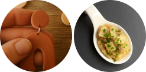
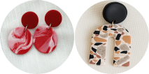
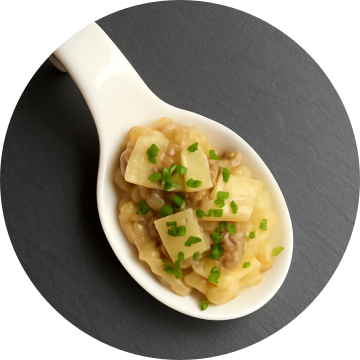

Gastrotaller personalizado
4-6 personas
Si sois entre 4 y 6 personas, personalizad vuestro taller en la web a vuestro gusto. Nosotr@s os contactaremos para elegir la fecha que mejor os encaje.
Gastrotalleraller de pendientes
 Técnicas de terracota o marmolado
Iniciación
Plazas disponibles: 0
En este taller aprenderás a crear pendientes de arcilla polimérica con técnicas
de terracota o marmolado. Ideal para principiantes.
Pica-pica:
- Arroz de carrilleras con parmesano.
- Brandada de bacalao con olivada y mantequilla de romero.
- Tostas de brie con trufa y jamón ibérico.
- Brochetas caprese con aceite de albahaca.
- Tacos de salmón aburi.
- Surtido de chips vegetales.
Alérgenos:
Lácteos, pescado, sésamo, soja, gluten, sulfitos.
Lácteos, pescado, sésamo, soja, gluten, sulfitos.